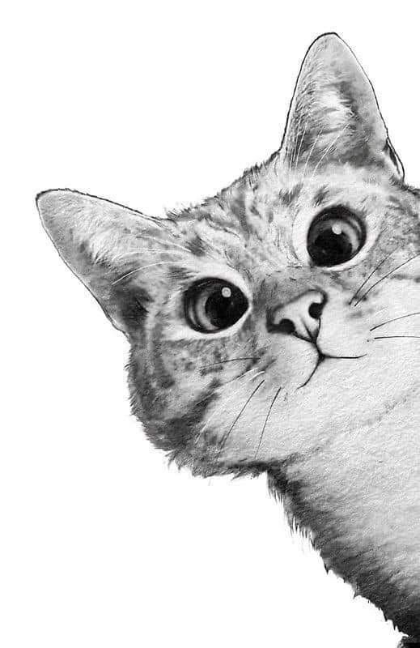
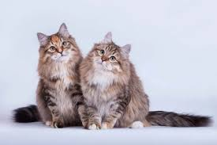
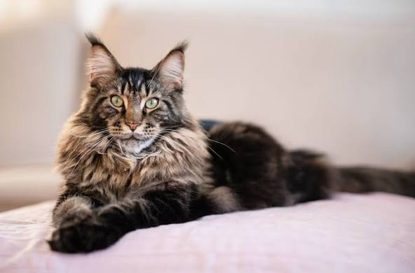

Почему не мыслю свою жизнь без них?
Я продолжаю открывать их мир, и эти открытия добавляют красок в мой...


Сибирская кошка -
— это крепкая, мускулистая полудлинношерстная порода с густой водоотталкивающей шерстью и пушистым хвостом. Характер у нее дружелюбный, игривый и преданный, но с независимыми ноткам приспосабливаются к жизни в квартире при наличии физической активности.
